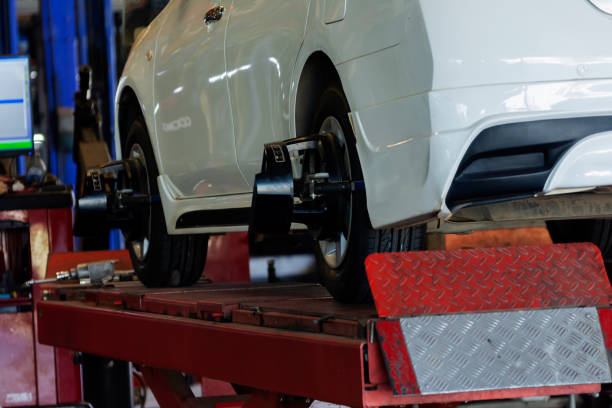

Benefits of choosing a fast auto body repair shop for your vehicle in Garland, TX
Posted by on 2024-05-23
When it comes to keeping your vehicle in top condition, choosing a fast auto body repair shop in Garland, TX can offer numerous benefits.
One of the biggest advantages of opting for a quick turnaround time is that you won't have to be without your vehicle for an extended period. Whether you rely on your car for commuting to work, running errands, or simply getting around town, having prompt repairs can help minimize any disruptions to your daily routine.
Fast auto body shops are also typically equipped with the latest tools and technology to efficiently assess and address any damages to your vehicle. This means that skilled technicians can quickly diagnose issues and provide accurate estimates for repairs, saving you both time and money in the long run.
In addition to speedy service, choosing a fast auto body repair shop can ensure that your vehicle is restored to its pre-accident condition as soon as possible. This not only helps maintain the appearance and value of your car but also ensures that it continues to perform at its best.
Moreover, opting for a fast auto body repair shop can give you peace of mind knowing that professionals are working diligently to get your vehicle back on the road safely. With their expertise and efficiency, you can trust that your car will receive high-quality repairs in a timely manner.
Overall, selecting a fast auto body repair shop for your vehicle in Garland, TX offers convenience, quality service, and peace of mind. By choosing a shop with a quick turnaround time, you can get back behind the wheel sooner rather than later – all while ensuring that your car receives the care it deserves.